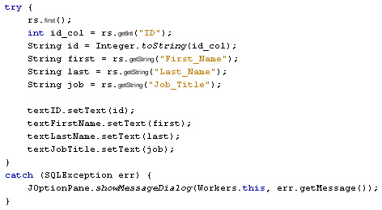

Learn Java- Complete Offline Beginners Guide
Moving to the first and last records of your database is a lot easier.
Double click your First button to create the code stub. Now add the
following code:

We have no need of an IF ... ELSE Statement, now. The only thing we need to do is move the Cursor to the first record with rs.First, then display the first record in the Text Fields.
Similarly, add the following code for your Last button (you can copy and paste the code for the First button):

The only change to make is the use of rs.Last on the first line in place of rs.First.
When you've added the code, run your programme again. You should now be able to jump to the last record in your database, and jump to the first record.
In the next part, you'll learn how to update a record.